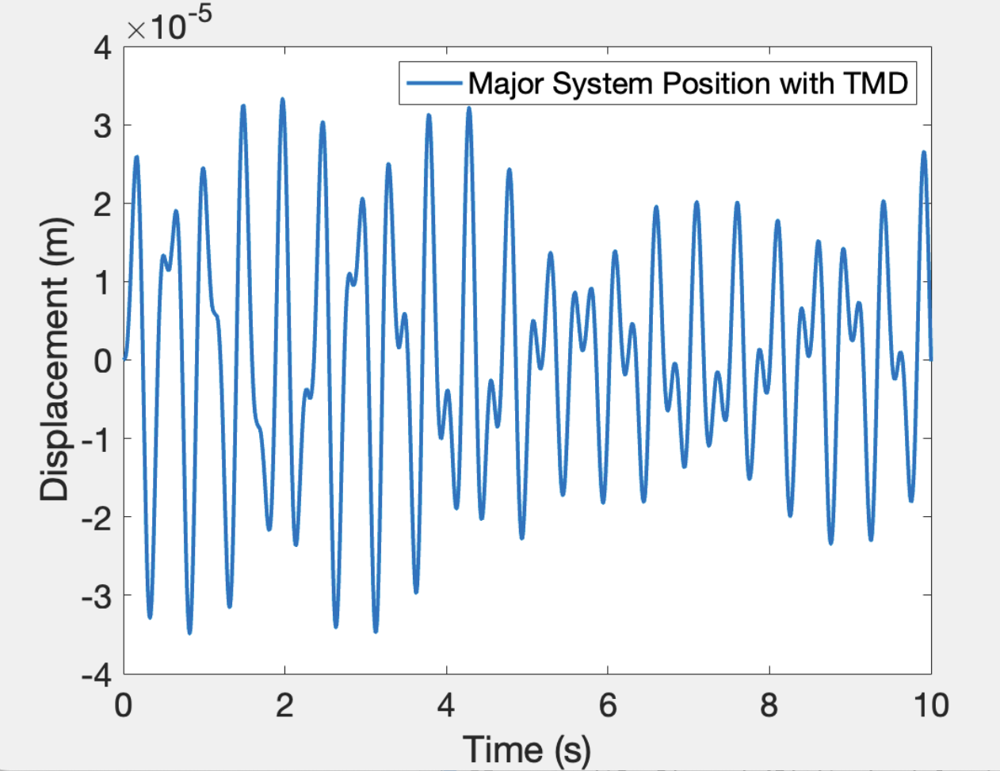
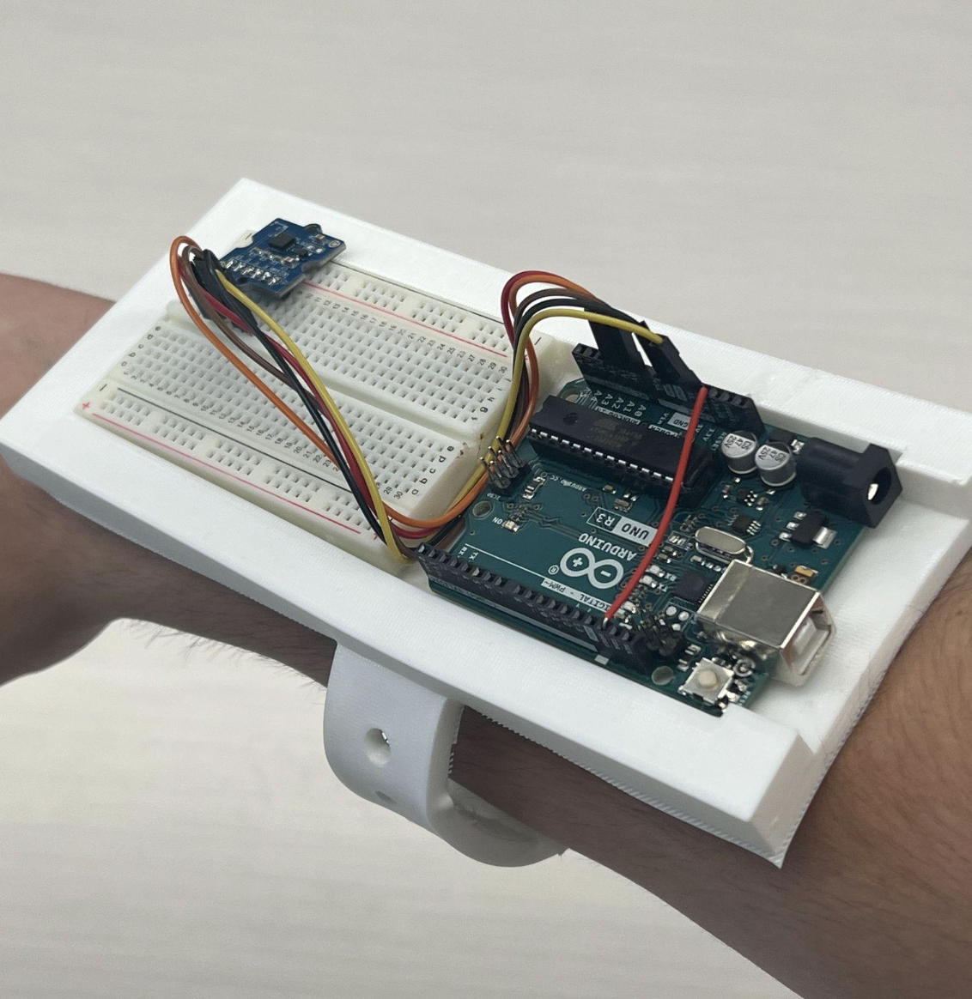

Cornell DEBUT · Cornell University · 8-person Team (Member)
I led the alpha-prototype design of a tuned-mass-damper cane for Parkinson's patients, from a 350-line MATLAB simulation through IRB-approved clinical trials, to a 1st place finish at the Medtronic BMES 2024 Student Design Competition.
Situation
Outcomes
The Problem
Cornell DEBUT is an undergraduate biomedical engineering entrepreneurial product development group affiliated with Cornell University. The team spends two years on market discovery, early-stage ideation, and basic clinical testing before submitting novel products for the DEBUT VentureWell grant, part of the National Institute of Health.
I was recruited following the market discovery phase, which had isolated a distinct need: a device to stabilize gait for stage II and III Parkinson's patients. My background in mechanical design put me in the lead role for the alpha prototype process. The team had already defined the basic concept: a cane with an integrated hand-tremor dampener to reduce instability, paired with more robust treading for better ground contact.
The open question wasn't whether a cane could help, it was whether a passive mechanical system could meaningfully reduce tremor amplitude without adding bulk, cost, or complexity a patient wouldn't tolerate in daily use.
Tremor resistance comes from adapting tuned-mass damper (TMD) technology, the same principle used to stabilize tall buildings against wind sway, to the much smaller mechanical problem of a Parkinson's hand tremor. A tuned mass on a spring is set to oscillate out of phase with the tremor frequency, canceling a portion of the motion at the point of contact rather than just absorbing it passively.
I optimized the damper by solving the ordinary differential equations governing the mechanical response of a Parkinson's hand tremor, in about 350 lines of MATLAB. The simulation sweeps preset mass and spring values, stores displacement over time in one array and the average residual in another, then renders two outputs: a 2D plot of cane displacement versus time for a chosen spring-mass pair, and a 3D surface across every discrete mass-spring combination tested, plotting average residual as a function of both.
That residual surface is what actually drove the design decision: it let me pick a spring-mass combination near the simulated minimum instead of guessing at a damper configuration and testing it physically one prototype at a time.

3D residual surface across mass and spring-constant combinations, used to select the damper configuration
Integrated the simulated tuned-mass damper into a cane design in Fusion360, with a flexible TPU stabilizing base for in-field testing. Parts sourced from McMaster-Carr, FDM-printed on a Stratasys F170, assembled onto a stock cane.
Refined for IRB-approved patient use. Built an accelerometer-based sensor on a TPU arm strap to record hand tremor independent of the cane itself, for testing at SUNY Cortland.
Rebuilt from 4 individual PLA components into an articulated, DFM-optimized design, sleeker and easier to manufacture, for the BMES/Medtronic competition and investor conversations.
The alpha prototype proved the mechanism worked. It was never meant to be manufacturable: four separate PLA components, hand-assembled onto a stock cane, built to validate the simulation against a real hand tremor, not to ship. Once clinical results confirmed the approach, the work shifted to a real industrial design problem: the same damper, but built from parts that could actually be cast and assembled at volume.
I led that transition. The beta design replaced the four-piece PLA assembly with articulated components designed around urethane casting and supply-chain logistics from the start, not retrofitted onto a research prototype. The result is sleeker, less obstructive, and closer to something a patient would actually want to be seen using.
| Mechanism | Tuned-mass damper (spring-mass) |
| Optimization | 300+ line MATLAB ODE simulation |
| Stabilizing base | Flexible TPU |
| Alpha fabrication | FDM, Stratasys F170 |
| Beta fabrication | Low-volume urethane casting |
| CAD | Fusion360 |
| Clinical result | ~12% tremor amplitude reduction |
| Recognition | 1st Place, Medtronic BMES 2024 |

Accelerometer-based sensor on TPU arm strap, used to record hand tremor independent of the cane
Testing & Analysis
I built the accelerometer-based sensor used in clinical testing myself: a small board on a TPU arm strap, sampled with Python on a microcontroller, recording relative hand tremor independent of the cane so we had a clean signal to compare before and after. On the analysis side, I wrote the MATLAB pipeline that filtered the raw accelerometer data and computed tremor amplitude in the direction of propagation for each patient session.
The same 300+ line simulation environment used to design the damper was reused here as the analysis backbone, the design tool and the validation tool share code, so results from clinical testing could be compared directly against the original simulated predictions rather than against a separate, disconnected analysis script.
We filed for IRB approval at the start of 2024 and began building the final prototype for patient use alongside the experimental testing equipment. Testing ran at SUNY Cortland's Kinesiology Lab with Parkinson's patients using the alpha prototype, captured on video and demonstrated by me throughout the sessions.
I filtered and analyzed the resulting accelerometer data in MATLAB and found a 12 to 15% decrease in relative hand tremor amplitude, in the direction of tremor propagation, for 3 of the 4 patients tested. Individual graphs and per-patient data points aren't published here to avoid any health data confidentiality issues, the result above is the aggregate finding, not raw patient data.
Final prototype in use, demonstrated during patient testing at SUNY Cortland
After clinical trials wrapped, the team compiled findings into a DEBUT VentureWell report and a submission for the BMES/Medtronic Student Design Competition. Being selected as a finalist meant turning SteadyStride from a research project into something that looked and worked like a real minimum viable product, not just a proof of concept that happened to work on four patients.
The pitch deck and investor-facing strategy were my work. I led development of the deck used at the conference and in every later investor conversation: branding, economic projections, and full-design renderings, alongside the redesign of the physical prototype itself. Spreading the four-part alpha design into an articulated, DFM-optimized assembly wasn't just an engineering decision, it was driven by what the cost model and supply chain would need to look like if this device were ever actually manufactured.
That work won 1st Place at the Medtronic BMES 2024 Student Design Competition, $2,500 toward commercialization, and it's the same pitch deck and report that now form the basis for any future incubator or grant conversation about the device.
Project Documents